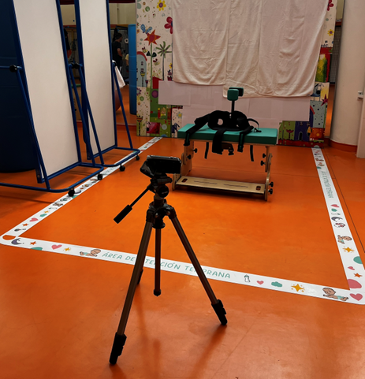

SATCo

González Vila, Vanesa
González-Eiroa, Irene
López Ruiz, Javier
Contell-Gonzalo, Elena
Romero Galisteo, Rita
Ródenas Martínez, Maribel
B Butler, Penélope
Robles-García, Verónica
Otros proyectos:
Ver información sobre Teddy Digital
Ver información sobre YC-PEM